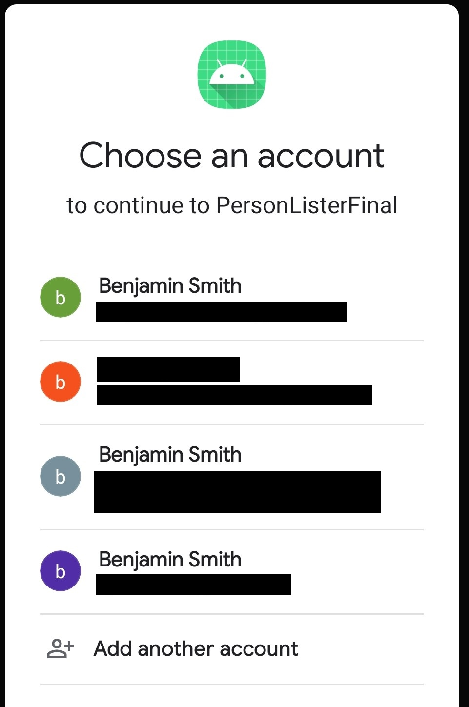
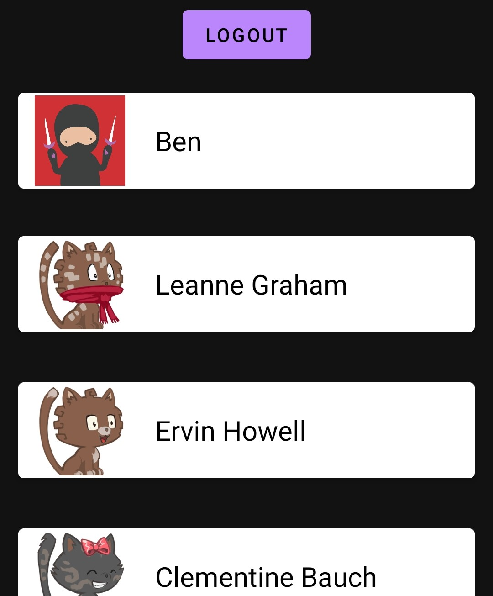
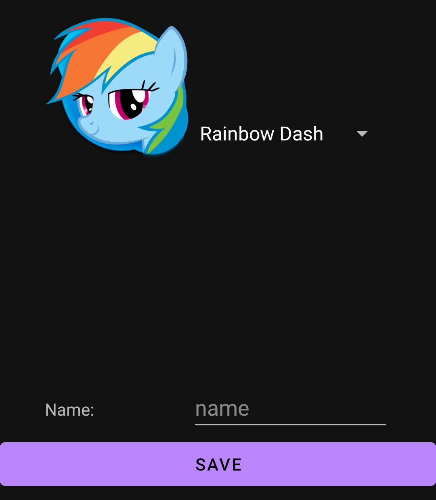
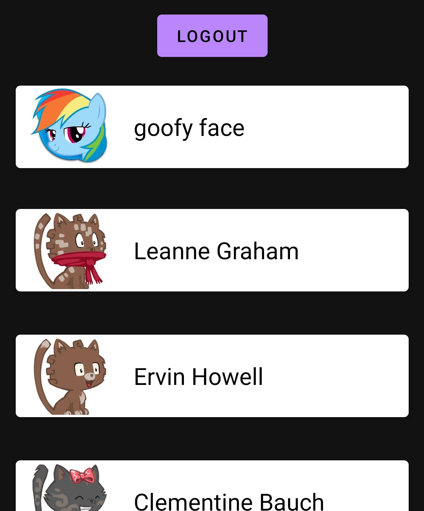
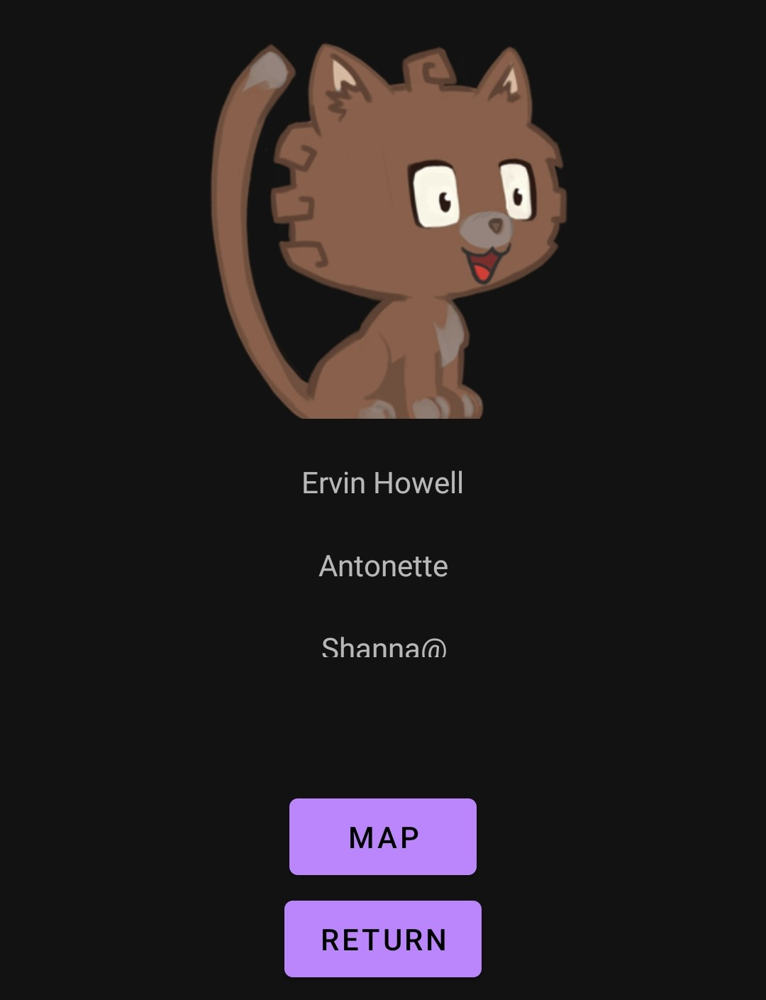
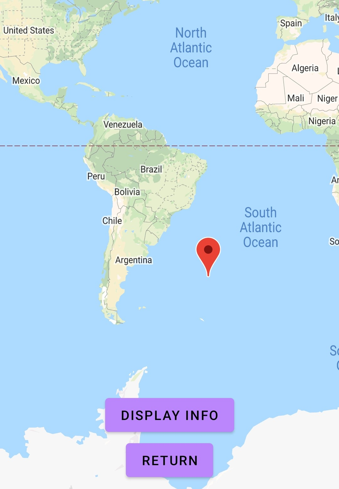

Android Application: Person Lister
Benjamin Smith

Benjamin Smith
The idea behind this application is a group of friends that want to know where each other are. This concept could easily be modified to accomodate any other 'finding' need from restaurants to sceneic locations, as it uses a third party API and parses the JSON data. It then uses Room as an ORM to store the information. A google map is produced as well to find one another.
This intial activity is designed to be a landing page. It allows one to log in using Google accounts and uses the information pulled from the signed in google account for information.
This is the traditional fragment designed to log in using your google accounts.
The main page. The top recycler view is the user signed in. If clicked on, an edit activity will be called allowing changes to be made to the user.
An API call is populating the 'friends' currently using OkHttp3 services. The images are also an API call and are managed through Picasso. If you click on the recycler view you select the person for more information.
The information initiates from being pulled in from google account content. The image and name can be changed. The image is a selector on a drop down.
After the change has been made.
This is the 'friend' activity. It is designed to find the location of given friends also on the application. In our case the information was just pulled from the same API as before and longitude and latitude values came with. Useing fragments, an information page and a google map is available.
Google map being produced to locate the friend via gps coordinates.
Connect to Github below to see all the code.